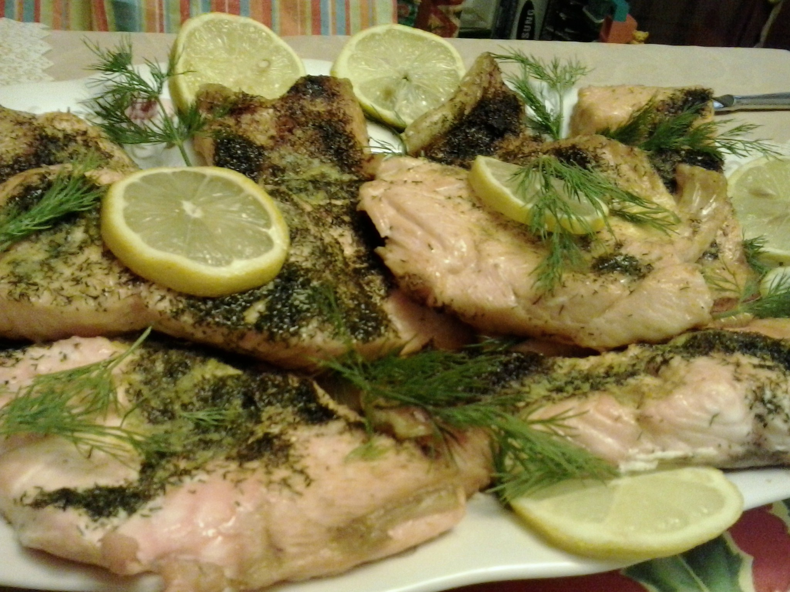

Lemony Steamed Fish
\
Description
Make mild-flavored, flaky fish fillets with this steamed fish recipe. Any type of fish will work, and you can increase the recipe easily.
Try halibut, cod, salmon, red snapper, trout, etc. Serve with a white and wild rice blend.
Lemon steamed fish is a light, healthy, and aromatic dish, often prepared as a whole fish or fillets, that features tender, flaky white meat infused with zesty citrus and fragrant aromatics.
It is a staple in various cuisines, ranging from delicate Chinese steamed dishes to vibrant, spicy Thai preparations ("Pla Neung Manao")
Ingredients
- 6 (6 ounce) halibut fillets
- 1 tablespoon dried dill weed
- 1 tablespoon onion powder
- 2 teaspoons dried parsley
- ¼ teaspoon paprika
- 1 pinch seasoned salt, or more to taste
- 1 pinch lemon-pepper seasoning
- 1 pinch garlic powder
- 2 tablespoons lemon juice
Steps
- Preheat the oven to 375 degrees F (190 degrees C). Cut six squares of aluminum foil large enough for each fillet.
Center each fillet on a foil square. Season with dill, onion powder, parsley, paprika, seasoned salt, lemon-pepper seasoning, and garlic powder, then sprinkle with lemon juice.
Fold the foil squares around the fillets to make pockets. Fold the edges to seal. Place sealed packets onto a baking sheet.
- Bake in the preheated oven until fish flakes easily with a fork, about 30 minutes.
Credit:Submitted by DHERDEBU